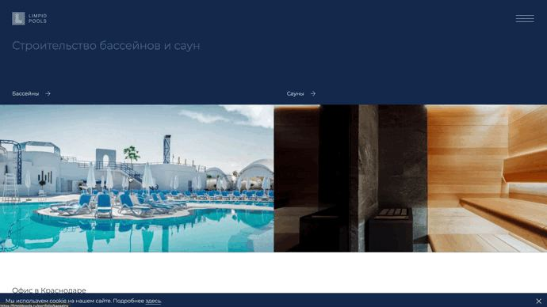
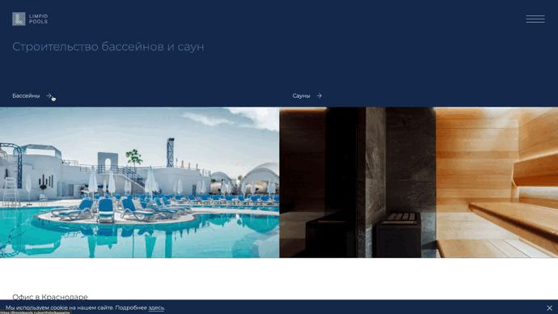

О проекте
Оглавление
- Клиент
- Цель проекта
- Начало работ
- Что сделали?
- Что под капотом?
- Результат
Окунуться в прохладный бассейн жарким летним днём — это почти так же хорошо, как и совместный проект с Limpid Pools. В очередной раз продемонстрировали свои навыки и доказали, что сжатые сроки — не помеха для профессионалов (намекаем на себя).
Клиент
Более 20 лет Limpid Pools занимаются проектированием бассейнов любой сложности, оборудуют сауны и бани, предлагают индивидуальные дизайн-проекты, учитывающие все пожелания клиентов и особенности самих объектов.
Вы можете знать эту компанию по известным по всему ЮФО проектам: бассейный комплекс «Santorini», Grand Aurora SPA или гостиничный комплекс Reef Residence.
Цель проекта
Разработка сайта в сжатые сроки.
Начало работ
Обычно мы руководствуемся чётко выработанной и эффективной схемой построения этапов работ: аналитика, прототипирование, дизайн, ТЗ на разработку сайта, frontend, backend и тестирование. Но в этот раз заказчик уже имел готовый дизайн сайта, разработанный Shinkin Family. Ребята подчеркнули премиальный имидж Limpid Pools и создали стильный и красивый визуал, за что им отдельное спасибо.
Учитывая этот момент и обозначенные ранее ограниченные сроки, мы подстроились под клиента и начали work hard.
Что сделали?
Сначала мы «причесали» макеты под web, подготовили их к вёрстке и предусмотрели множество анимаций. Им, кстати, уделили особенно пристальное внимание, поскольку основной идеей было разработать имиджевый сайт, цепляющий своими «фишками». Решили анимировать практически каждый функциональный элемент, но сделать это аккуратно и красиво.

Страниц на сайте сознательно не стали делать много, чтобы акцентировать внимание на главном: проекты, типы бассейнов, сервис.
Основная задача главной страницы — направить посетителя на раздел с проектами бассейнов или саун, поэтому она максимально лаконична. Движение курсора по функциональным блокам пускает «рябь», будто мы наблюдаем дуновения ветра по глянцевой поверхности воды.
На странице проектов представлены завершённые работы. Проекты подгружаются бесшовно по мере скроллинга. Здесь мы сохранили предусмотренный в изначальном дизайне шахматный порядок компоновки элементов, создав впечатление просмотра журнала за счет подгруздки титульных фото в разных размерах.
В детальной странице проекта тоже соблюдён шахматный принцип компоновки элементов и анимация появления фотографий. Ленту проектов сделали бесконечной: по достижении последнего изображения в проекте появляется следующий проект.
На странице «Типы бассейнов» пользователь может выбрать тип чаши или тип покрытия бассейна, чтобы оценить их внешний вид на ландшафте.
На странице «Сервис» представлена справочная информация о работе сервисных специалистов компании. Здесь же представлены все контакты сервисных центров во всех городах присутствия Limpid Pools.

Что под капотом?
Для удобства контент-менеджеров клиента реализовали загрузку всего контента на сайт из админки. Помогла в этом горячо любимая нами October CMS. Из неё можно редактировать состав страниц сайта, загружать фотографии, создавать и редактировать проекты в портфолио, управлять контактами по каждому из городов, добавлять и редактировать сотрудников. Всё очень просто и не занимает много времени. Дополнительно подготовили заказчику подробное руководство пользователя.
Результат
Limpid Pools получили в своё распоряжение стильный и современный сайт, который нам удалось сдать даже раньше обозначенных сроков.
За классным бассейном для жарких летних дней пожалуйте на сайт Limpid Pools, а за классным сайтом только в Nuts Agency!